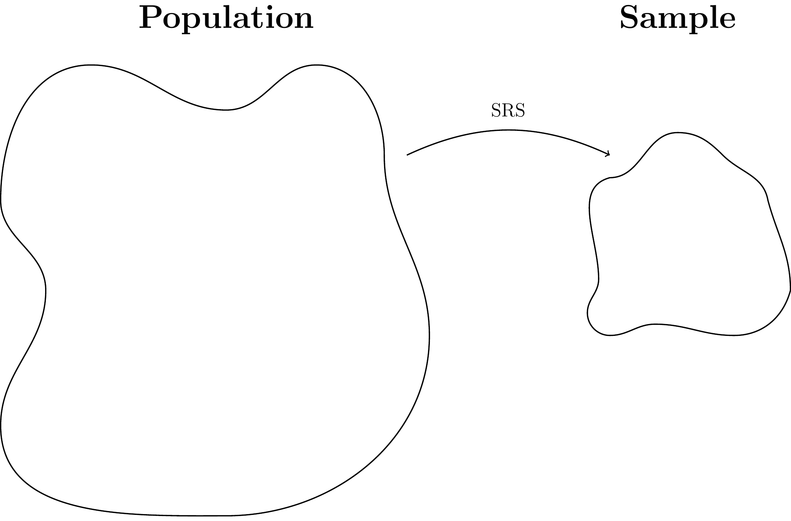

2 Introduction to Biostatistics
2.1 What is Biostatistics?
Biostatistics is “simply” statistics applied to a specific set of problems, namely problems related to biological questions. Hence, the question “what is biostatistics?” is quickly replaced by “what is statistics?”
From Wikipedia1: “Statistics is the discipline that concerns the collection, organization, displaying, analysis, interpretation, and presentation of data.” That is quite the range, but all it is saying is that statistics is the science of making sense of data.
It is very hard to pinpoint exactly what statistics is, but it is rather easy to dismiss at least one very common misunderstanding: statistics is NOT an exact science. There is (almost) never just one answer to a question. Rather, statistics is a decision science in the sense that at every step of the way, from study design to data collection to data presentation to data analysis and interpretation, you have to make decisions. And inevitably, your conclusions depend on every single one of those decisions.
2.2 Biostatistics in PUBLHLTH 783
In this class, we’ll be considering what might seem like a very simple setup with simple questions, and a general approach to answering said questions. The truth is basically all statistical methods, no matter how complicated they might seem, follow (to some extend) this exact pattern. In this class, we will work our way through this pattern, and talk about how the simplest of methods work. The hope is that when we’re done, you take these simple methods with you, and whenever you encounter more complicated methods, you can draw parallels back to what you have seen here, which hopefully will help you make at least some sense of even the most complicated methods.
The story begins…
Any statistical analysis begins with a research question. This question always relates to a certain feature or characteristic of a certain population, or of multiple populations. The population is the group of entities one wants to learn more about. It could be that one is interested in the life expectancy (feature) of U.S. adults (population), risk of diabetes (feature) among people with a certain genetic profile (population), the resistance to a disease (feature) among ants in Governor Dodge State Park (population), strength (feature) of pipes produced by a certain manufacturer (population), etc.
Now, the first fundamental idea of the approach we’ll pursue in this class is this: there is a single true answer to the question asked. The only one way to obtain the truth is to observe the entire population. If we could measure the disease status (diabetes/no diabetes) of every single individual with the genetic profile of interest, we could evaluate the true risk. The catch is, maybe obviously to someone, that this is simply not feasible. Often we do not even know exactly how big the population of interest is, which means it is impossible to survey every single subject in the population. And even if we knew exactly how many people were part of the population, how to get a hold of them, and how to convince them to participate in our study, it is very unlikely we would have the resources (read: $$$) to reach out and include every single one of them.
This leads us to the picture we will return to over and over again in this class: there is some population of interest. We want to say something about a certain feature of the population. This will usually be a mean of a measurement, the risk ratio or odds ratio of two groups, or something similar. Unfortunately, there is no way we can actually measure the feature for every single subject in the population – if we could, we would simply calculate the mean, and be done with it! Instead, we take a sample from the population. The hope is that we obtain this sample in such a way that the sample is representative of the entire population, and therefore we can use the information obtained from the sample to say something about the population.

When we talk about chances of observing something when sampling from the population, we talk about probabilities. What is the probability a sample of 23 people has more than 5 diabetics? What is the probability a randomly chosen individual from Minneapolis will develop cancer?
When we try to use a sample to say something about the general population from which the sample was created, we do inference.
The plot thickens…
We now have an idea of what it is we want to do: take a sample, obtain some information about the thing of interest, then use that information to say something about the general population. Pretty simple. The problem is, how do we actually put the pieces together in a way that allows us to generalize to the population? Example: we are interested in estimating the prevalence of cardiovascular disease in the general population of U.S. adults. We have a hunch that the true prevalence is 11%. We take a sample of 3799 female U.S. adults of which 379 have a history of CVD. So, the prevalence is estimated to be \(\frac{379}{3799} \approx 10 \%\)2. The prevalence in our sample is clearly different from our hypothesis, so clearly our hypothesis is wrong…. right?
If only it was that simple. The problem here is that our prevalence estimate depends on the specific sample we got. If we were to repeat this experiment, we would ask a different group of people about their history of CVD, which would lead to a different estimate of the prevalence. There’s simply no way (or it is at least very, very unlikely) we’ll ever get a sample of people for which the prevalence matches our hypothesis exactly. So the question is not simply if our sample has the same prevalence as hypothesized, but rather is it “close enough” for us to believe our hypothesis.
Close enough? Did I read that right?
Yup. The majority of statistical methods, and definitely everything we’ll be talking about in this class, are trying to decide if what we observe in our sample is “close enough” to our hypothesize about the population. The idea is that if what we observe is very far from our hypothesis, then it is unlikely that the hypothesis is true.
There are generally two ways of framing the question:
- Is what we observe (think prevalence in sample) “close enough” to the hypothesis (that the prevalence in the population is 11%)?
- What range of hypotheses (values for the prevalence) would we accept given what we observed?
The first approach is refered to as testing a statistical hypothesis, or null hypothesis significance testing (NHST), while the second is refered to as constructing a confidence interval. These two are closely related, as we will see later, but the information contained in the results differ drastically. While testing a hypothesis only provides you with a result concerning one value, the confidence interval gives you a wide range of values that you to some extent believe could be the true value. Why would anyone then ever report the result of a statistical hypothesis test without a confidence interval, you ask? That is a very, very, very good question to which I do not have an answer…
This has all been very abstract (and I think I got carried away in that last paragraph). We’ll see examples of this over and over again throughout the semester, so hopefully it’ll be easier to comprehend as we go along.